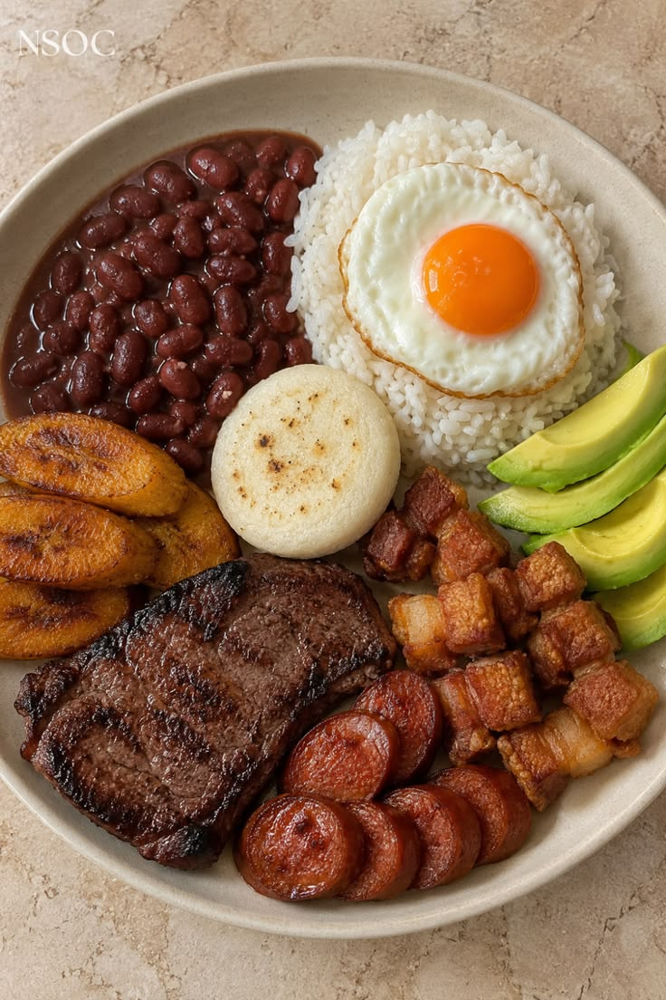

Bendeja Paisa

La bandeja paisa es el plato típico más representativo y abundante
de la gastronomía de Colombia, originario de la región antioquia y el eje cafetero
para 4 personas
Tiempo 90 minutos
Ingredientes
- Frijoles remojados (200g)
- Carne Molida (200g)
- Acaite (20ml)
- Huevo (4uni)
- Sal (5g)
- Pimienta (5g)
- Tomate (120g)
- Cebolla Cabezona (50g)
- Platano Maduro (140g)
- Ajo (5g)
- Aguacate (120g)
- Porcion de arroz (80g)
- Arepa de maiz (40g)
Preparacion
- Remojar Frijoles
Dejar los frijoles remojando durante 24 o 12 horas
-
Cocinar Frijoles
Poner a cocer los frijoles remojados junto con el sofrito
Junto con el ajo en una olla de presion -
Salter la carne
En una sarten antiaderente junto con un poco de aciete
Saltea la carne molida, y si gustas pasala por un procesador
para tener textuta de carne en polvo -
Freir platano
En una sarten con un poco de aceite prepara y freir los platano
- Servir
Sirve en un plato la porcion de frijoles
la porcion de arroz, la porcion de carne. El
Aguacate, la arepa, el platano maduro y dos huevos